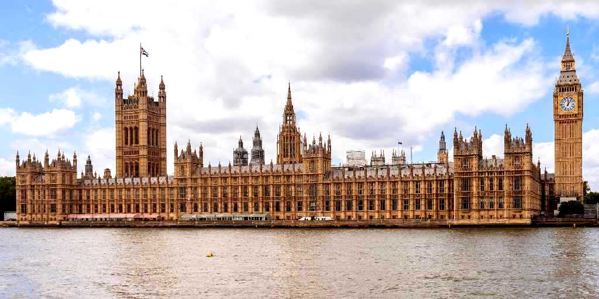
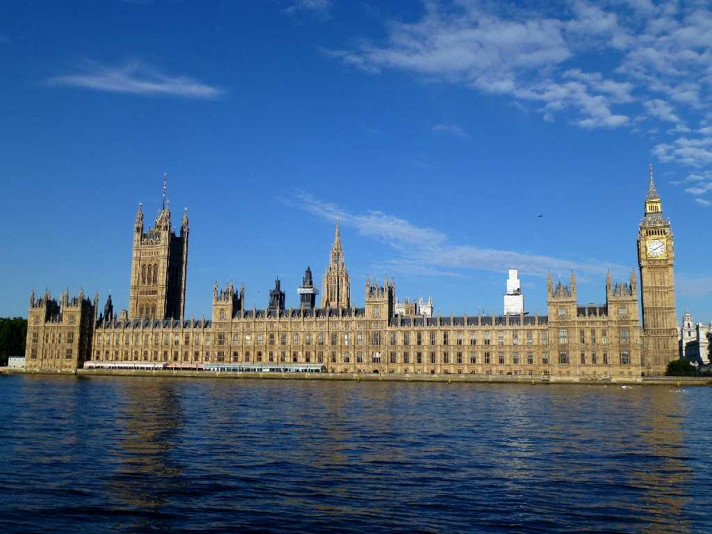

August 1973 Big Ben Westminster Abbey Palace London
産業革命が頂点に達し先進技術により強大な力を得た大英帝国時代の１８５９年以来高さ９６ｍの大時計台は世界標準時(GMT)の鐘の音を世界に鳴らし続けている

Big Ben Westminster Abbey Palace London
８０日間世界一周鉄道の旅で５２日目 学生時代以来約４０年ぶりの再訪問 本日国会議事堂特別内部見学ツアーに参加したが撮影禁止で議会室着席厳禁でした
August 14 2013 Big Ben Westminster Abbey Palace London